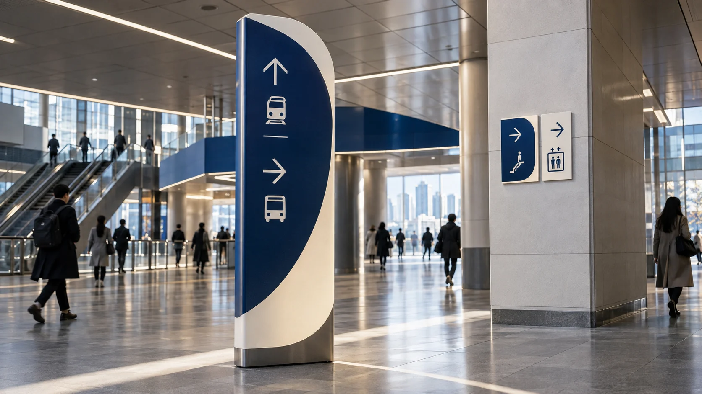
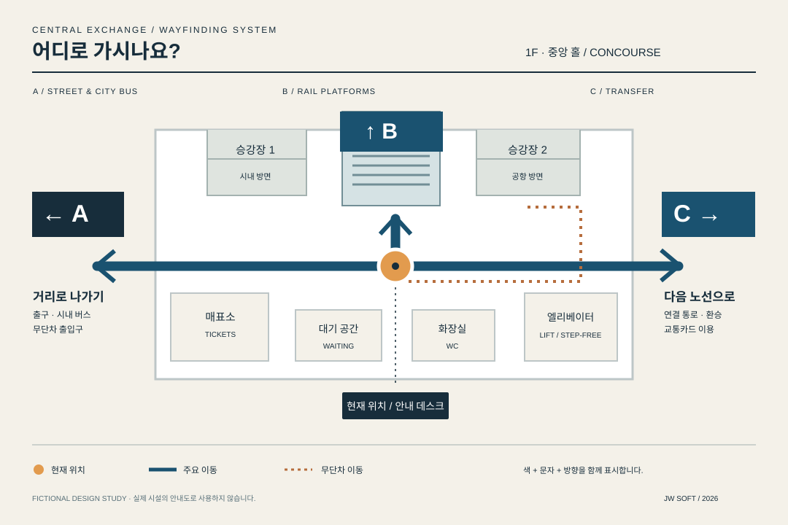
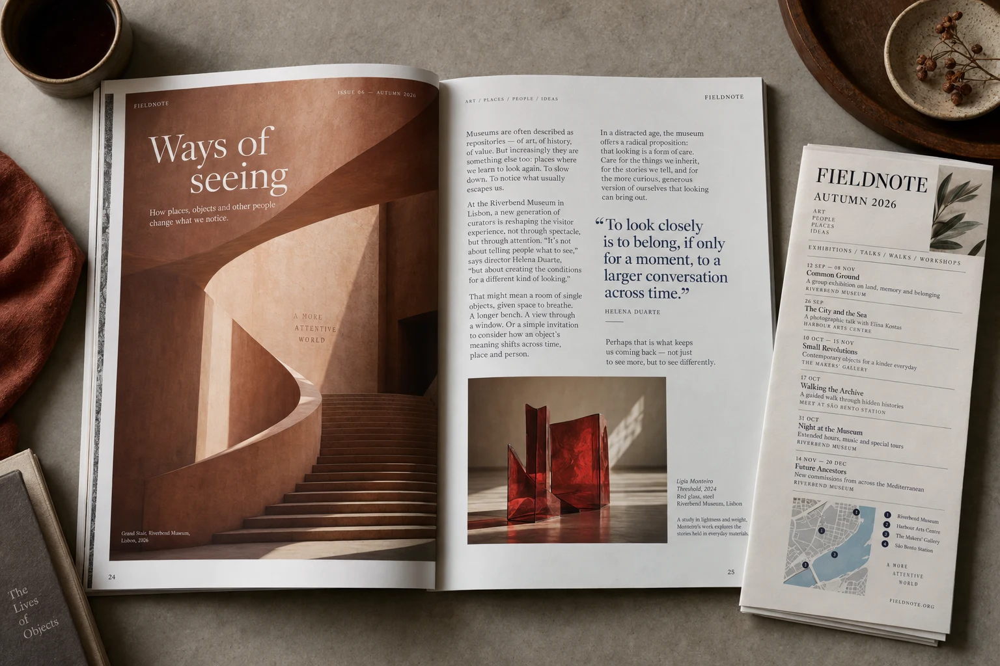

아이디어가
현장에서 읽힐 때.
이동 공간의 안내, 손에 쥐는 인쇄물, 화면 안의 경험까지.
서로 다른 매체에 맞는 결과물을 살펴보세요.

01 / CENTRAL EXCHANGE공간 안내 · 시연용 가상 사례
처음 온 사람도
길을 잃지 않도록.
먼 거리에서 방향을, 가까이에서는 장소와 편의시설을 읽습니다. 평면과 실제 사인의 정보가 같은 순서로 이어집니다.

A출구·시내버스B승강장 1·2C연결 통로·환승

EDITORIAL SYSTEM / FIELDNOTE넘길 때마다,
넘길 때마다,
새로운 밀도.
표지의 인상에서 안쪽의 기사와 일정표까지. 읽는 거리와 순서가 매체의 구성을 정합니다.
편집 그리드 · 본문 위계 · 프로그램 안내
다음 결과물은
어떤 모습이어야 할까요?
공간과 종이, 화면에 필요한 역할부터 함께 정리합니다.
프로젝트 문의 안내 ↗